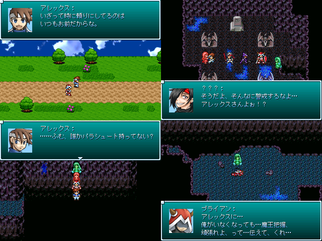

| №024 アレブラと精霊たち―水晶の畑と邪黒水晶― | |
|
 | |
| 作者：大富豪の大貧民役 | |
| 作成ツクール：2000 | |
|
作者コメント(5/7更新) アレックスとブライアン+αが突然異変が起こったという洞窟に向かいます。 そこには暴れているモンスターの他に行方不明になってしまった魔法の子供たちもいるらしく…？ 装備品で使える技が変わるようにしたり、雑魚もボスも「舐めて掛かり過ぎる」と死ぬバランスにしてみたり レベルを上げて物理で殴ってもいいですが敵はボスも含め必ず弱点属性を持っていてそれを突くと結構簡単に なるようにしてみました。長さは中編ぐらい？ 修正版におまけを用意しました。暇な方はやってみてね！かなりムズいよ！ | |
|
管理人コメント よく見てみると、会話ウィンドウが上下2つに、顔グラも左右同時表示。 こういう細やかな作りこみを感じさせる作品は大好きなんだぜ。完成が待ち遠しいぜ！ SS第2弾が届いたぞ！ | |
| ダウンロード(9.35mb) / 感想掲示板 | |
| 前の作品 / 次の作品 / TOPへ戻る | |